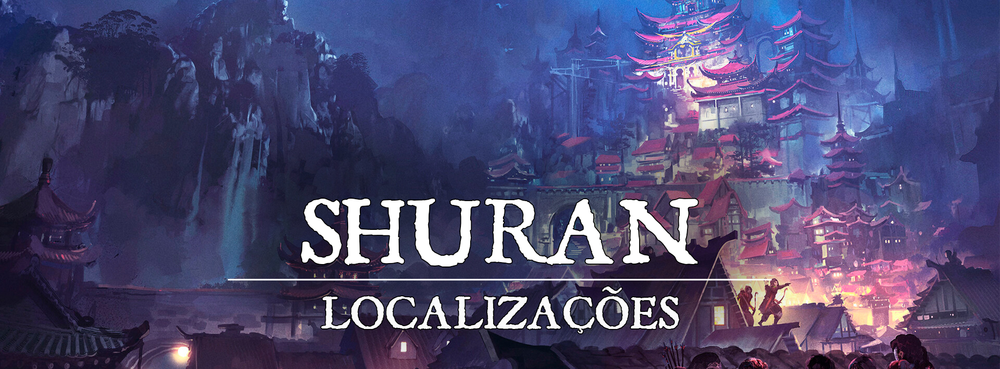

Shuran - Capital
“Cultive seu espírito com disciplina e paciência e não perderá o equilíbrio em frente à escuridão que espreita.”
Descrição
Shuran é a capital de Turgon, o Império das Nuvens, o coração do reino onde a unificação dos clãs foi firmada. A cidade é considerada como uma das mais belas de toda a região, mas o que mais chama atenção são suas tradições e construção única. O clã da raposa decidiu se firmar e dar início ao Império das Nuvens no pé do sagrado Monte Turgon, e desde então, a cidade continua a prosperar cada vez mais. As informações da Cordilheira das Nuvens convergem em Shuran, e por isso é um ponto de interesse para todos em Turgon. Cheia de especiarias e oportunidades, a cidade também é um ponto comum entre os aventureiros do local, que sempre buscam algo novo para explorar.
Descrição Visual:
tiago-sousa-capa-v-copy.png |Shuran
{kind=link}
Ao pé do grande Monte Turgon, diversas luzes capturam a atenção dos olhos de viajantes, a enorme cidade se aninha entre as montanhas, e possui uma grande subida conforme se avança, aos poucos dando lugar ao Palácio Imperial em seu ponto mais alto. Suas belas estruturas preenchem o pé da montanha, e possuem uma arquitetura refinada, digna do coração do Império das Nuvens.
A maioria das ruas contam com o chão de pedra trabalhada, e a subida pela montanha é feita de um modo a evitar grandes escadarias, permitindo maior fluidez e evitando o cansaço dos pedestres. Além disso, um rio cruza a cidade, e por isso uma grande ponte foi construída, permitindo a passagem de um lado ao outro.
Nas ruas centrais da cidade se encontram diversas variedades no comércio, sempre cheia de mercadores e artesãos dispostos para atender as necessidades do povo. No entanto, também existem muitos lugares calmos como jardins e pequenas praças.
Sociedade
População:
O povo de Shuran é composto em sua maioria por Humanos, Elfos, Meio-elfos e alguns poucos shifters. De vez em quando é possível ver alguma criatura de origem youkai, mas nem sempre a sociedade os aceita muito bem. Alguns são tratados com desconfiança, mas raramente ocorrem grandes problemas nessa questão.
Cultura:
É comum ver diversos pequenos rituais e tradições em Shuran, geralmente os festivais mostram uma diferença cultural bem expressiva. Assim como no resto de Turgon, suas manufaturas são únicas. Desde suas vestimentas e culinária até suas armas, ferramentas e arquitetura são coisas que são facilmente identificáveis. E é justamente em Shuran que pode-se ver o ápice dessa cultura. Fazer pequenas oferendas é rotineiro na vida dos Turgonitas, e em toda virada de ano, todos fazem uma visita ao maior templo de Inari que puderem encontrar. A disciplina e trabalho duro que os turgonitas exercem no dia a dia chega a ser algo notável.
Caráter:
O povo de Shuran é bem tradicionalista e disciplinado, são bem educados e buscam fazer o bem de diversas formas, seguindo os ensinamentos de Inari.
Datas e Festividades:
Festival do Verão: 21 de Junho; Festival do Outono: 22 de Setembro; Festival de Inverno: 21 de Dezembro; Festival de Primavera: 21 de Março. Em cada uma das estações, Turgon tem um grande festival em honra a Inari, e a um dos Quatro Lordes. Em cada um dos festivais, ocorre também uma reunião de Youkais ao topo do monte Turgon, no Templo da Prosperidade. Em Shuran, são épocas comuns de se ter encontros sobrenaturais.
Festival do Verão. No dia 21 de Junho ocorre o Festival do Verão, dedicado a Suzaku e Inari. Por tradição, uma grande festa ocorre, e à meia-noite os turgonitas preparam lanternas de papel, escrevem desejos dentro delas, e as jogam aos céus, preenchendo-os com luzes e desejos que podem ser vistos de muito longe. O festival também é conhecido como “Festival das Lanternas”
Festival do Outono. No dia 22 de Setembro ocorre o Festival do Outono, dedicado a Byakko e Inari. É uma época onde as últimas colheitas antes do inverno são feitas, e por isso o festival de outono é cheio de diversas comidas. Geralmente passado na cidade, em seus centros comerciais, as pessoas passeiam e festejam, bebendo e comendo o quanto podem.
Festival de Inverno. No dia 21 de Dezembro ocorre o festival de inverno, dedicado a Genbu e Inari. Diferente dos outros festivais, esse dia é um pouco mais calmo. Conforme a neve cai, as pessoas se dedicam a fazer uma visita ao templo de Inari, e passam um tempo com seus familiares e amigos.
Festival da Primavera. No dia 21 de Março ocorre o Festival da Primavera, dedicado a Seiryuu e Inari. Durante o dia o festival ocorre perto dos rios, lagos, e em outros lugares onde a natureza floresce. É a data onde as cerejeiras desabrocham, se despedindo do inverno. O povo de Shuran leva várias flores de lótus e as soltam perto da fonte do rio que corta a cidade, onde elas fazem todo seu caminho até o lago. O festival também é conhecido como “Festival da Lótus”
Religião:
Assim como todas as cidades de Turgon, o povo de Shuran adora a Inari, a deusa raposa da prosperidade, dos andarilhos e dos espíritos da natureza. O povo é muito religioso, mas sua cultura não exalta a adoração como outros povos. É comum em Shuran que as pessoas de vez em quando visitem templos, santuários, ou simplesmente façam artesanato e pequenas preces para os Kami. Raramente é encontrada opressão religiosa pelo local.
Economia
Uma das principais fontes de renda manuais de Shuran é a pescaria, mas o lugar onde ela realmente brilha é no turismo e comércio, comprando especiarias do resto de Turgon e as revendendo ali mesmo, ou para Nari, onde são direcionadas ao resto do mundo. Shuran também recebe uma boa parcela de impostos das outras cidades do reino. Ao seu redor, existem algumas pequenas vilas focadas na agricultura.
Serviços:
Os serviços prestados em Shuran giram em torno giram em torno do turismo na cidade, e para o Monte Turgon, pesca, viagens de barco pelo lago, e outros vários tipos de serviços urbanos. Diversos artesãos da maioria dos tipos se encontram, e existem até mesmo algumas lojas de pergaminhos, itens mágicos e produtos raros.
Governo
Shuran é a capital de Turgon, o Império das Nuvens, liderada pelo Imperador Hoshihito Tennouji, e pelo clã da Raposa. Logo abaixo deles, a nobreza dos quatro clãs tem seu lugar, mesmo não sendo muito presentes, é possível encontrar alguns comércios e alojamentos que pertencem a eles, assim como diplomatas dos clãs da cidade. Logo abaixo da nobreza, os samurais possuem um cargo relevante, tomando conta da cidade com autoridade. Crimes e outros assuntos eram levados primeiro aos samurais e ao magistrado, e apenas casos muito graves receberiam a atenção do imperador em pessoa. Casos extremos poderiam condenar o criminoso ao Seppuku. Em necessidade, prisões eram feitas na parte interna da cidade, ao lado do quartel da guarda. Posicionado de maneira que mesmo que houvesse fugas, ainda seria necessário correr em direção da única ponte que pode levá-los para fora da cidade.
Poderio Militar:
Shuran contém um exército grande formado de samurais, sua técnica é constantemente aperfeiçoada no quartel da guarda, e conta com um bom número de cavalos. Suas armas são afiadas e suas armaduras resistentes. Além disso, dependendo do assunto, contam com os Exorcistas de Inari em suas forças. Estão atrelados diretamente ao Clã da Raposa, no entanto, não têm vínculos diretos com o império em si como uma força militar. Eles são presentes em sua força militar em casos de ameaça Youkai, ataques exteriores, ou em caso de pedido direto de forças mágicas, mas não costumam patrulhar cidades
Conflito
Shuran é uma cidade relativamente pacífica e próspera, mas de vez em quando surgem casos de youkais malignos causando problemas dentro e fora da cidade, geralmente sendo resolvidos pelos Exorcistas de Inari, mas alguns casos passam despercebidos. Pequenos grupos criminosos também costumam se formar de tempos em tempos, causando problemas na cidade, mas geralmente ficam escondidos por trás dos panos. Contrabandistas também costumam aparecer por perto, devido a localização da cidade. O Domínio Espiritual de Turgon também pode apresentar ameaça, então o povo de Turgon fica em alerta para não permitir que domínios profanos se alastrem para o plano material.
Organizações Relevantes
O Clã da Raposa, formado pela família imperial e seus servos mais fiéis, é o principal e mais influente clã de Turgon, o líder do clã sempre foi o próprio Imperador. A Alta-Sacerdotisa, também é tradicionalmente escolhida de dentro do clã, mas não necessariamente precisa ser uma filha do clã, quando ocorre da deusa raposa escolher uma jovem de fora do clã como sacerdotisa, a mesma é levada para a capital para se casar com o Imperador.
Os Exorcistas de Inari são uma organização majoritariamente formada por usuários de magia. A organização tem um grande foco nos youkais, buscando manter o seu equilíbrio e purificar ou banir youkais corrompidos que constantemente assolam a região do império das nuvens. Eles mantêm uma pequena base de operações em Shuran, para sempre ter seus olhos pelo lugar, mas sua verdadeira base se localiza no Monte Turgon.
A Liga de Jade é uma organização comerciante que busca estreitar os laços econômicos entre as cidades de Turgon, auxiliando comerciantes e buscando a prosperidade do reino. A Organização tem uma base em Shuran, mas sua base central se localiza em Nari.
Locais Relevantes
O Palácio da Raposa, também conhecido como Palácio Imperial, é o lar da família Tennouji e casa do clã da Raposa. O castelo é adornado com algumas imagens de Inari e dos Quatro Lordes, foi construído na encosta do monte Turgon e é a construção mais alta da cidade de Shuran.
O Palácio da Raposa é um lugar muito luxuoso e imponente, com muitas salas grandes e bem decoradas, com paredes adornadas com tapeçarias finas e telas pintadas por artistas talentosos. Existem diversas janelas grandes que permitem a entrada de luz natural e oferecem vistas deslumbrantes da cidade de Shuran e da cordilheira das nuvens. Também há muitos jardins encantadores no Palácio da Raposa, com fontes relaxantes e caminhos de pedra sinuosos que serpenteiam entre as flores e árvores. Há também áreas ao ar livre com mesas e cadeiras confortáveis onde a família Tennouji e seus convidados podem se reunir e desfrutar da bela vista.
A Ponte do Amanhecer é uma enorme ponte que faz a passagem pelo rio que corta Shuran ao meio. Feita de madeira avermelhada, a ponte recebeu esse nome pois é possível ver perfeitamente o sol se erguendo entre as montanhas pela manhã caso você esteja na ponte. É a única conexão entre as duas partes da cidade, e é grande o suficiente para diversas carroças passarem ao mesmo tempo, e alta para que pequenos barcos também consigam passar por baixo dela.
A Estalagem da Carpa Dançante é famosa em Shuran, fica no começo da parte alta, após a Ponte do Amanhecer. É a taverna e estalagem mais popular de Shuran, lugar que atrai diversos viajantes e residentes todos os dias, com preços justos, mas não baratos demais. Oferecem ótima comida e quartos, e além disso, possuem fontes termais na parte traseira. É um dos principais pontos almejados por viajantes.
O Quarteirão da Moeda, localizado logo antes da Ponte do Amanhecer, é o centro comercial de Shuran. Diversos mercadores, artesãos e estalajadeiros se localizam lá. O quarteirão é altamente chamativo, com algumas pequenas atrações turísticas para atrair a atenção dos viajantes. Estátuas, pequenos laguinhos com carpas, e diversas barraquinhas com produtos interessantes são facilmente encontrados.
O Quarteirão da Espada, localizado na parte alta da cidade, é um lugar onde se encontra o quartel da guarda de Shuran, além de alguns outros dojos, e também dá espaço a algumas forjas, onde são feitas as melhores armas que poderiam desejar. Não é um local muito turístico, mas mesmo assim chama a atenção de viajantes interessados.
O Distrito do Shamisen, localizado na lateral da parte alta da cidade, é conhecido por ser um local de entretenimento mais refinado. Música, geishas, bebidas de qualidade e mercadorias finas para o entretenimento nobre são bem fáceis de serem encontradas.
O Templo de Inari se localiza na parte alta da cidade, logo antes da entrada do Palácio Imperial. Sua área é enorme, e esse templo se destaca muito dos demais santuários na cidade. Meticulosamente tratado, esse templo parece que nunca viu um grão de poeira.
O Bosque dos Kami é um pequeno bosque que se localiza bem ao lado de Shuran, cercado pela cidade em sua maioria. Conectado à parte baixa da cidade, ao lado da origem do rio. Um lugar tranquilo que dá lugar a algumas festividades e outros passeios pela cidade. Diversas pequenas estatuetas e mini-santuários se encontram no bosque.
O Portão da Jornada é encontrado na parte alta da cidade, é um enorme Torii bem adornado. Além dele, há uma longa trilha que eventualmente leva até o topo do Monte Turgon. É o ponto de partida de muitos viajantes que buscam a iluminação. Algumas pequenas barraquinhas se formam próximas do portão, vendendo alguns recursos para aqueles que desejam subir o lendário Monte Turgon.
A Casa de Chá Strygwyr é bem popular no quarteirão da moeda, possuem aromas únicos, geralmente fazem chás com especiarias de longe. O dono da casa de chá é um grande centauro.
NPCs Relevantes
3c4e5250f09ed70abe79ed79d7a828f1.png |Alta-Sacerdotisa de Inari, Asaki Tennouji
{kind=link}
A Alta-Sacerdotisa de Inari, Asaki Tennouji, do Clã da Raposa, possui uma grande influência, atuando nos Exorcistas de Inari, e no próprio reino das nuvens. Pelo alto índice religioso do reino, ela costuma comparecer em algumas reuniões importantes entre os clãs.
api.png |Imperador de Turgon, Hoshihito Tennouji
{kind=link}
O Imperador de Turgon, Hoshihito Tennouji, líder do Clã da Raposa, um homem considerado sábio por seus vassalos, sempre focado em guiar o Império das Nuvens para o melhor caminho possível. Um homem altamente disciplinado e nacionalista, sempre respeitando as tradições de Inari.
0185c80078e73921f62295b9d93e95f0.png |Capitão da Guarda, Murai
{kind=link}
O Capitão da Guarda, Murai, é um homem já com uma certa idade, atualmente responsável por guiar os treinamentos no Quartel e coordenar a guarda. Enquanto não está ocupado com seu serviço, costuma passar pela cidade, onde compartilha um pouco de sua sabedoria pelas ruas. Tem uma personalidade calma, e parece que sempre tem a resposta para suas perguntas.
Origem
Shuran é a capital de Turgon, o Império das Nuvens, e foi fundada logo quando a cordilheira foi unificada nos anos finais das eras das trevas. Seu fundador foi Yoshihito Tennouji, o primeiro imperador do Império das Nuvens. Após o conflito entre os quatro clãs, onde a negatividade afetava fortemente as terras, foi alcançada a unificação, e uma nova era de paz prosperou em Turgon. Para simbolizar essa unificação e conectar os quatro cantos do reino, Shuran foi criada já com a intenção de se tornar a capital. A cidade foi planejada, mas mesmo assim, ela continua a se expandir mesmo nos dias de hoje. Hoje é um grande farol para viajantes que passam por Turgon, onde as especiarias e culturas dos quatro clãs convergem, cheia de pontos turísticos, e ainda por cima é o começo da grande trilha para subir o Monte Turgon.